Agent Manager 功能文档
Agent Manager 是一个企业级 AI 智能体管理平台，提供完整的 AI 智能体创建、配置和管理能力。平台支持多种 Agent 类型（如 OpenClaw、Hermes 等），并支持多模型接入、多渠道集成，助力企业快速构建和管理各类 AI 智能体。
1. 计算巢部署
本章介绍如何通过阿里云计算巢（ComputeNest）在已有 ACS 集群上部署 Agent Manager 管理平台（含 Supabase 后端数据库）。
1.1 前置条件
部署 Agent Manager 管理平台前，需要先完成 OpenClaw-ACS-Sandbox 集群版 的部署。如果尚未部署，请先前往计算巢创建 Sandbox 集群版实例：
👉 创建 OpenClaw-ACS-Sandbox 集群版实例
1.2 部署步骤
第一步：进入计算巢部署页面
在计算巢控制台中找到 Agent Manager 企业版 服务，点击创建实例，进入参数配置页面。
第二步：填写部署参数
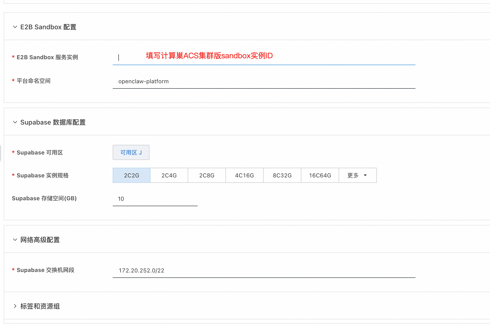
按照以下说明填写各项配置：
E2B Sandbox 配置
| 参数 | 必填 | 说明 |
|---|---|---|
| E2B Sandbox 服务实例 | 是 | 填写已部署的 OpenClaw-ACS-Sandbox 集群版的计算巢服务实例 ID |
| 平台命名空间 | 否 | 管理平台在 K8s 集群中的命名空间，默认 agent-platform，一般无需修改 |
Supabase 数据库配置
| 参数 | 必填 | 默认值 | 说明 |
|---|---|---|---|
| Supabase 可用区 | 是 | — | 选择 Supabase 实例的可用区，需与 ACS 集群在同一地域 |
| Supabase 实例规格 | 是 | 2C2G | 数据库实例规格，开发测试选 2C2G 即可，生产环境建议 2C4G 及以上 |
| Supabase 存储空间(GB) | 否 | 10 | 数据库存储空间大小 |
网络高级配置
| 参数 | 必填 | 说明 |
|---|---|---|
| Supabase 交换机网段 | 是 | Supabase 实例所在的交换机（VSwitch）CIDR 网段，如 172.20.252.0/22 |
⚠️ 重要提醒：Supabase 交换机网段不能与 VPC 内已有的交换机网段冲突！ 部署前请先在 阿里云 VPC 控制台 查看当前 VPC 下已有的交换机网段，确保填写的网段不与任何已有网段重叠，否则会导致部署失败。
第三步：确认信息并创建
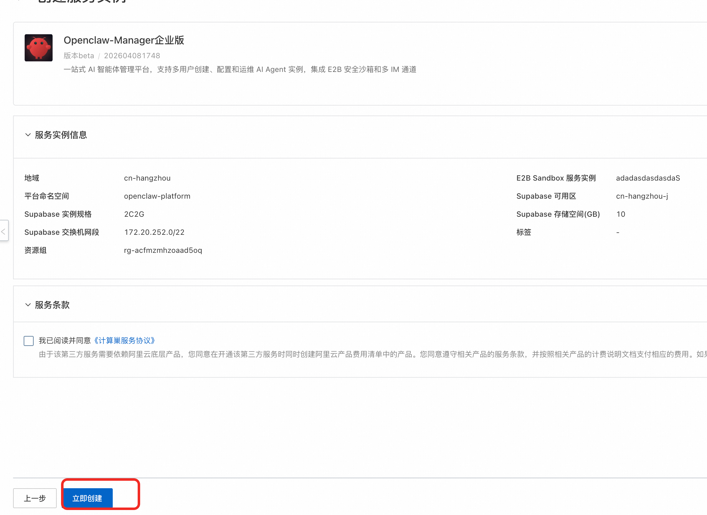
- 核对所有配置参数是否正确
- 勾选 「我已阅读并同意《计算巢服务协议》」
- 点击 「立即创建」 按钮开始部署
部署过程约需 5-10 分钟，期间系统将自动完成以下操作：
- 创建 Supabase 数据库实例
- 初始化数据库表结构和管理员账号
- 在 ACS 集群中部署管理平台应用
- 配置 ALB Ingress 负载均衡
1.3 部署验证
部署完成后，在计算巢控制台的服务实例详情页中可以获取管理平台的访问地址。打开访问地址，看到 Agent Manager 的登录页面即表示部署成功。
初始管理员账号： 邮箱
admin@agent.local，密码admin123。请首次登录后立即修改密码！
1.4 常见部署问题排查
| 问题 | 可能原因 | 解决方案 |
|---|---|---|
| 部署失败，提示网段冲突 | Supabase 交换机网段与 VPC 内已有网段重叠 | 在 VPC 控制台查看已有网段，更换一个不冲突的 CIDR 网段重新部署 |
| 部署超时 | Supabase 实例创建耗时较长 | 在计算巢控制台查看部署事件日志，等待或重试 |
| 平台页面无法访问 | ALB Ingress 尚未就绪 | 等待 1-2 分钟后重试，或检查 ACS 集群中 Ingress 资源状态 |
| 登录后提示数据库连接失败 | Supabase 实例未完全就绪 | 等待 Supabase 实例状态变为「运行中」后重试 |
1.5 服务实例升级
- 前往supbase控制台手动备份数据库
- 创建备份
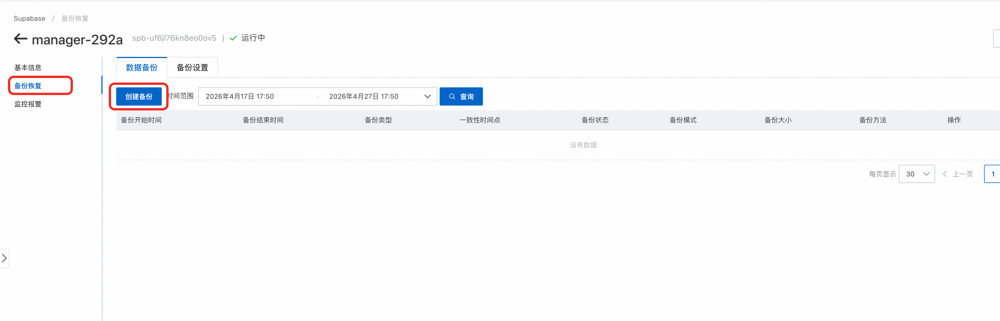
- 回到计算巢服务实例界面，选择合适的版本对服务实例升级。
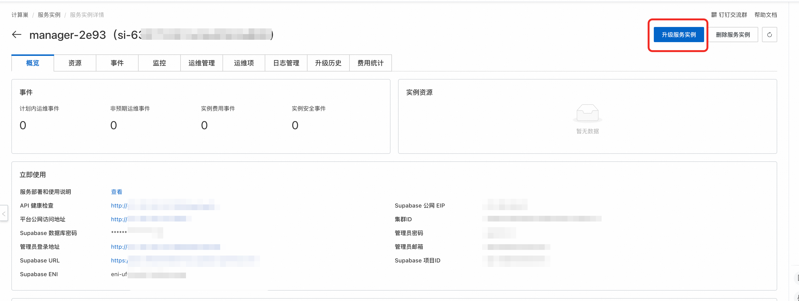
- 验证服务实例升级成功
2. 平台概览
2.1 首页
访问平台首页，你将看到 Agent Manager 的欢迎页面：
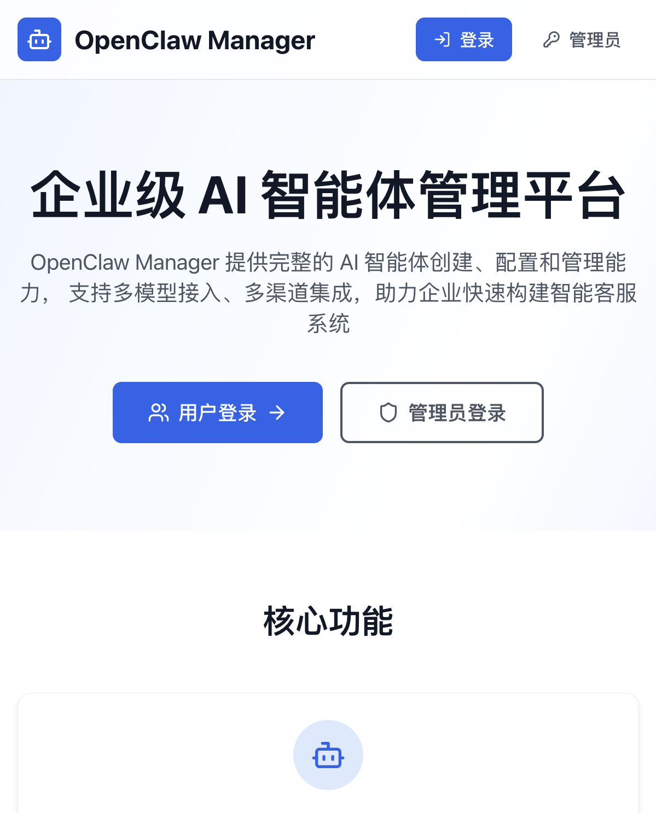
首页分为三个区域：
顶部导航栏： 包含平台 Logo、「登录」按钮（普通用户 OAuth/SSO 登录）和「管理员」按钮（邮箱密码登录）。已登录用户将看到「用户中心」和「管理中心」（管理员）入口。
Hero 区域： 展示平台标语「企业级 AI 智能体管理平台」和两个主要入口按钮： - 「用户登录」 — 跳转到用户登录页（OAuth / SSO / 邮箱密码） - 「管理员登录」 — 跳转到管理员邮箱密码登录页
核心功能介绍： 三张功能卡片展示平台的核心能力： - 智能体管理 — 创建、配置和管理多种类型的 AI 智能体（如 OpenClaw、Hermes 等），支持多实例部署 - 多模型支持 — 支持 Qwen、DeepSeek 等多个主流 AI 大模型 - 用户管理 — 精细化用户实例配额管理，Token 配额管理
2.2 角色与权限
平台有两种角色：
| 角色 | 权限范围 |
|---|---|
| 管理员 (admin) | 可访问管理后台所有功能：仪表盘、用户管理、Agent 配置、沙箱配置、模型配置、实例管理（所有用户） |
| 普通用户 (user) | 仅可访问用户中心：查看/创建/管理自己的 Agent 实例，配置模型和渠道 |
3. 登录系统
平台提供两种登录入口，分别面向管理员和普通用户。
3.1 管理员登录
管理员使用邮箱 + 密码方式登录，入口与普通用户分离。
操作步骤：
- 在首页点击右上角的 「管理员」 按钮，或直接访问
/admin/login - 输入管理员邮箱和密码
- 点击 「登录」 按钮

登录成功后将自动跳转到管理后台仪表盘。如果输入了非管理员账号，会被重定向到用户中心。
初始管理员账号： 首次部署时，系统会通过数据库迁移脚本自动创建管理员账号。默认邮箱通常为
admin@agent.local，密码为admin123。请首次登录后立即修改密码！
页面底部还提供了 「普通用户登录」 链接，可快速切换到用户登录入口。
3.2 用户登录
普通用户支持三种登录方式：邮箱密码登录、OAuth 第三方登录、SAML SSO 企业登录。
操作步骤：
- 在首页点击 「登录」 按钮或 「用户登录」 按钮，跳转到
/login - 根据需要选择登录方式：
- OAuth 登录 — 点击对应的 OAuth 提供商按钮（如「阿里云登录」「GitHub 登录」）
- SAML SSO 登录 — 点击 「企业 SSO 登录」 按钮，通过企业身份认证系统登录
- 邮箱密码登录 — 在页面下方的「或使用账号密码登录」区域，输入管理员分配的邮箱和密码，点击 「登录」 按钮
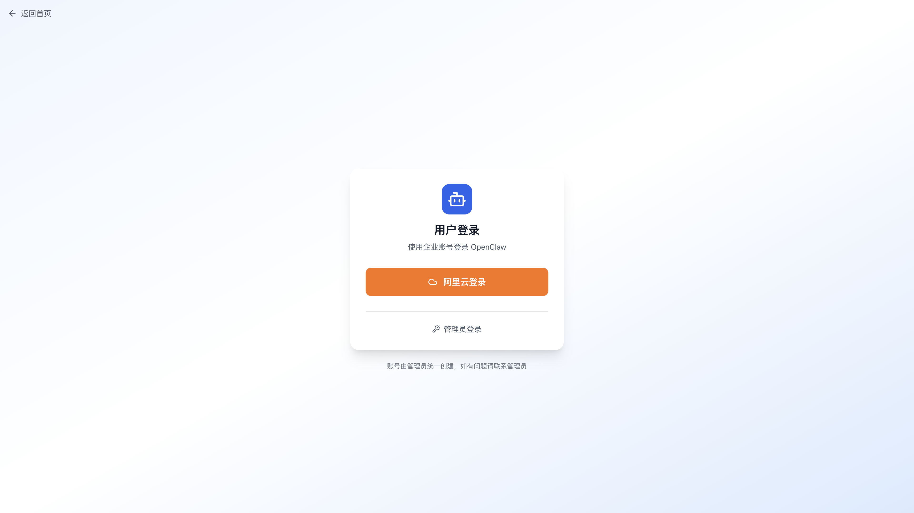
登录页面的布局从上到下依次为：OAuth 按钮区域 → SSO 按钮区域 → 分隔线（"或使用账号密码登录"） → 邮箱密码输入表单。
邮箱密码登录说明： 用户的邮箱和密码由管理员在「用户管理」中创建。管理员添加用户时选择「邮箱密码」认证方式并设置初始密码，用户即可使用该邮箱和密码登录。详见 4.2 用户管理 → 添加用户。
登录成功后将自动跳转到用户中心的实例列表。页面底部还提供了 「管理员登录」 链接。
4. 管理员功能
管理员登录后进入管理后台，左侧为导航栏，包含以下功能模块。
管理后台采用左侧导航栏 + 右侧内容区的经典布局：
- 左侧导航栏 — 列出所有管理功能菜单，可折叠（点击顶部
X/☰图标切换） - 顶部标题栏 — 显示当前页面标题和当前登录用户名
- 侧边栏底部 — 显示用户信息和退出登录按钮
左侧导航栏包含以下菜单项：
| 菜单 | 路径 | 说明 |
|---|---|---|
| 仪表盘 | /admin/dashboard |
平台运营数据概览 |
| 用户管理 | /admin/users |
用户列表、添加、批量导入 |
| ↳ 单点登录 | /admin/sso-config |
OAuth / SAML SSO 配置（二选一） |
| ↳ 邮箱认证 | /admin/email-auth |
邮箱密码登录配置 |
| 模型配置 | /admin/models |
管理 AI 模型和提供商（AI 网关 / 标准 API） |
| 实例列表 | /admin/instances |
所有用户的 Agent 实例 |
| Agent 配置 | /admin/agent-types |
核心功能：Agent 类型管理（配置模板、启动命令、渠道、技能） |
| 沙箱配置 | /admin/sandboxsets |
核心功能：集群中 SandboxSet 资源的查看与管理 |
4.1 仪表盘
路径： /admin/dashboard
仪表盘是管理后台的首页，提供平台运营数据的全局概览。页面从上到下分为三个区域。
基础统计卡片（顶部）
页面顶部横向排列核心指标卡片，每个卡片包含图标、数值和标签：
| 指标 | 图标 | 说明 |
|---|---|---|
| 总用户数 | 👥 | 平台注册用户总数 |
| Agent 实例 | 📦 | 所有用户创建的实例总数 |
| 可用模型 | 🧠 | 当前已启用的 AI 模型数量 |
当启用 AI 网关和 SLS 日志后，还会额外展示三张卡片：
| 指标 | 图标 | 说明 |
|---|---|---|
| 今日活跃用户 | 📊 | 今日有 API 调用的用户数 |
| 今日请求数 | 🔄 | 今日 API 调用总次数 |
| 今日 Token 用量 | 🔑 | 今日所有用户的 Token 消耗总量（格式化显示，如 1.2M） |
最近的 Agent 实例（中部）
白色卡片，以表格形式展示最近创建的 5 个实例：
| 列 | 说明 |
|---|---|
| 名称 | 实例名称 |
| 用户 | 所属用户邮箱 |
| Agent 配置 | 实例关联的 Agent 类型（如 OpenClaw、Hermes），以 indigo 色标签形式展示 |
| 状态 | 绿色「运行中」或灰色「已停止」徽章 |
| 模型 | 使用的 AI 模型名称 |
| 创建时间 | 中文格式的创建时间 |
今日用户 Token 消耗排行（底部）
当启用 AI 网关和 SLS 日志后，显示今日 Token 消耗排行榜（Top 10）：
| 列 | 说明 |
|---|---|
| 用户 | 用户邮箱 |
| 总 Token | 输入 + 输出的总 Token 数 |
| 输入 Token | 用户发送的 Token 数 |
| 输出 Token | AI 回复的 Token 数 |
| 请求数 | API 调用次数 |
如果尚未配置 AI 网关和 SLS，此区域会显示灰色提示文字。
AI 网关控制台入口
如果已配置 AI 网关，仪表盘右上角会显示 「AI Gateway 控制台」 蓝色按钮，可直接跳转到阿里云 APIG 控制台查看更详细的网关统计数据。
4.2 用户管理
路径： /admin/users
用户管理页面用于管理平台的所有用户，支持单个添加、批量导入、编辑和禁用等操作。
用户列表
页面顶部左侧为搜索框（可按用户名或邮箱搜索），右侧为 「添加用户」 和 「批量导入」 两个操作按钮。
用户列表以表格形式展示，包含以下列：
| 列名 | 说明 |
|---|---|
| 用户 | 显示用户名和邮箱 |
| 角色 | 管理员 / 普通用户 |
| 状态 | 启用 / 禁用 |
| Consumer ID | AI 网关 Consumer ID（仅启用 AI 网关后显示，可点击跳转到阿里云控制台） |
| 实例上限 | 用户可创建的最大实例数 |
| 已用 Token | 用户今日已使用的 Token 数（仅启用 AI 网关后显示） |
| 操作 | 编辑 / 重置密码 / 启用禁用 |
表格底部支持分页，每页 10 条记录。
添加用户
点击右上角 「添加用户」 按钮，在弹窗中填写以下信息：
| 字段 | 必填 | 说明 |
|---|---|---|
| 用户名 | 是 | 用户的显示名称 |
| 邮箱 | 视情况 | 邮箱登录方式必填，OAuth/SAML 方式可选（留空会自动生成占位邮箱） |
| 认证方式 | — | 选择 邮箱密码、OAuth 单点登录 或 SAML 单点登录 |
| 密码 | 视情况 | 仅邮箱登录方式需要（至少 6 位），OAuth/SAML 用户无需密码 |
| 角色 | — | 普通用户 / 管理员 |
| 实例数量上限 | — | 默认 5 |
典型场景：为用户创建账号密码登录
- 管理员在「用户管理」页面点击 「添加用户」
- 填写用户名和邮箱，认证方式选择 「邮箱密码」，设置初始密码
- 创建完成后，将邮箱和密码告知用户
- 用户在
/login页面下方的「账号密码登录」区域输入邮箱和密码即可登录- 登录后用户可在用户中心创建和管理自己的 Agent 实例
批量导入用户
点击右上角 「批量导入」 按钮，支持两种方式：
- 上传 CSV/JSON 文件 — 选择本地文件上传
- 直接粘贴数据 — 在文本框中粘贴 CSV 或 JSON 格式的数据
CSV 格式示例：
email,password,username,role,maxInstances,authProvider
user1@example.com,password123,User1,user,5,email
user2@example.com,,User2,user,5,oauth
user3@example.com,,User3,user,5,saml
点击 「下载 CSV 模板」 可获取标准模板文件。系统还自动兼容阿里云 IDaaS 导出的 CSV 格式（带
userExternalId等字段），会自动识别为 SAML 用户。
每批最多支持 50,000 个用户。导入完成后会显示成功和失败的统计信息。
编辑用户
点击用户行右侧的 编辑 图标，可修改用户的以下信息：
- 用户名
- 邮箱
- 角色（管理员/普通用户）
- 状态（启用/禁用）
- 实例数量上限
4.3 单点登录配置
路径： /admin/sso-config
单点登录配置页面将 OAuth 和 SAML SSO 配置整合在一个统一界面中。OAuth 和 SAML SSO 为互斥配置（二选一），管理员可通过顶部的切换按钮启用其中一种。
页面组成
- 顶部切换区 — 显示当前启用的 SSO 模式（OAuth / SAML / 未启用），可切换模式
- OAuth 标签页 — 查看和管理 OAuth 登录提供商
- SAML SSO 标签页 — 配置企业 SAML 2.0 单点登录
4.3.1 OAuth 配置
支持的 OAuth 提供商
平台支持所有 Supabase 内置的 OAuth 提供商，包括但不限于：
| 提供商 | 说明 |
|---|---|
| 阿里云 (AlibabaCloud) | 使用阿里云 RAM 账号登录 |
| GitHub | 使用 GitHub 账号登录 |
| 使用 Google 账号登录 | |
| Azure AD | 使用 Microsoft Azure AD 登录 |
| GitLab | 使用 GitLab 账号登录 |
| Apple | 使用 Apple ID 登录 |
| Discord / Slack / Twitter / ... | 其他 Supabase 支持的 20+ 种 OAuth 提供商均可使用 |
如何配置 OAuth（以阿里云为例）
配置 OAuth 需要同时在 阿里云控制台 和 Supabase 控制台 两侧操作。
第一步：在阿里云创建 OAuth 应用
- 登录 阿里云 RAM 控制台，进入 OAuth 应用管理
- 点击 创建 OAuth 应用
- 填写应用信息：
- 应用名称：自定义名称，如
Agent Manager - 应用类型：选择 WebApp
- 回调地址（Redirect URI）：这里是关键，填写 Supabase 的回调地址：
https://<你的Supabase项目URL>/auth/v1/callback例如：https://abc123.supabase.co/auth/v1/callback - 创建完成后，记录 AppId（即 Client ID）
- 在应用详情页创建 AppSecret（即 Client Secret），请立即保存，Secret 只显示一次
- 在创建的应用中，添加 OAuth 范围，添加aliuid 和profile
回调地址的格式说明： 所有 OAuth 提供商的回调地址都统一填写
https://<你的Supabase项目URL>/auth/v1/callback。Supabase 会自动处理不同提供商的回调路由，你不需要针对不同提供商设置不同的回调地址。
第二步：在 Supabase 控制台启用阿里云 OAuth
- 登录 Supabase 控制台（地址在
.env的VITE_SUPABASE_URL中配置） - 进入 Authentication → Providers
- 在提供商列表中找到 AlibabaCloud，点击展开
- 开启 Enable 开关
- 填入第一步获得的 Client ID (AppId) 和 Client Secret (AppSecret)
- 点击 Save 保存
- 修改Site URL，找到 URL Configuration，将Site URL 修改为Agent Manager 的访问地址
第三步：在 Agent Manager 中验证
- 进入 Agent Manager 管理后台 → 用户管理 → 单点登录 → OAuth 标签页
- 点击右上角 「刷新」 按钮
- 确认阿里云已显示为 「已启用」 状态
配置完成后，用户登录页面（/login）将自动出现 「阿里云登录」 按钮：
用户点击按钮后会跳转到阿里云 OAuth 授权页面，使用阿里云 RAM 账号完成授权后自动回到 Agent Manager 并完成登录。
配置其他 OAuth 提供商
其他 OAuth 提供商的配置流程完全一致，只是第一步在对应平台创建应用：
| 提供商 | 创建应用的地址 | 要填的回调地址 |
|---|---|---|
| GitHub | GitHub Developer Settings → New OAuth App | https://<Supabase URL>/auth/v1/callback |
| Google Cloud Console → APIs & Services → Credentials | https://<Supabase URL>/auth/v1/callback |
|
| Azure AD | Azure Portal → App registrations | https://<Supabase URL>/auth/v1/callback |
| GitLab | GitLab Applications | https://<Supabase URL>/auth/v1/callback |
无论哪个提供商，回调地址始终填 Supabase 的 callback URL，这一点是统一的。
OAuth 配置页面功能
- 已启用的提供商 — 以卡片形式展示所有已启用的 OAuth 提供商及其状态
- 「Supabase 控制台」按钮 — 页面提供快捷链接，可直接跳转到 Supabase 控制台的 Providers 配置页面
- 「刷新」按钮 — 手动从 Supabase 拉取最新的提供商启用状态
4.3.2 SAML SSO 配置
在「单点登录」页面切换到 SAML 标签页，可配置企业 SAML 2.0 单点登录。配置完成后，用户登录页面（/login）会自动出现 「企业 SSO 登录」 按钮。
⚠️ 注意： 通过计算巢部署的 Supabase 当前版本暂不支持 SAML SSO 功能。如需使用 SAML SSO，请在部署完成后手动前往 Supabase 控制台 将 Supabase 实例升级到支持 SAML 的版本后，再进行以下配置。
本节以阿里云 IDaaS 为例，说明完整的配置流程。其他 IdP（如 Azure AD、Okta 等）流程类似。
SAML 配置页面组成
SAML SSO 配置区域包含以下几个部分：
- SP 信息（配置到 IdP） — 展示 Supabase 作为 SP（Service Provider）的信息，需要复制到 IdP 侧
- 回调地址配置 — 设置 SSO 登录完成后跳转回应用的 Site URL
- 已配置的 SSO — 查看和管理已添加的 SAML SSO 配置
- 添加 SAML SSO — 新增 SSO 配置的入口
完整配置流程（以阿里云 IDaaS 为例）
第一步：在 Agent Manager 中获取 SP 信息
进入 管理后台 → 用户管理 → 单点登录 → SAML 标签页，在 「SP 信息（配置到 IdP）」 区域，记录以下两个值（可点击旁边的复制按钮）：
| 字段 | 说明 | 示例 |
|---|---|---|
| Entity ID (Issuer) | SP 实体标识 | https://abc123.supabase.co/sso/saml/metadata |
| ACS URL (Callback) | 断言消费服务地址 | https://abc123.supabase.co/sso/saml/acs |
第二步：在阿里云 IDaaS 控制台创建 SAML 应用
- 登录 阿里云 IDaaS 控制台
- 进入对应的 IDaaS 实例，点击 应用 → 添加应用 → 选择 SAML 2.0 类型
- 填写应用基本信息（名称等）
第三步：配置 IDaaS SAML 应用的 SP 信息
在 IDaaS 应用的 SAML 配置中：
- SP Entity ID — 填写第一步获取的 Entity ID
- SP ACS URL — 填写第一步获取的 ACS URL
- NameID 格式 — 选择
emailAddress - NameID 表达式 — 填写
user.email（注意：直接写user.email，不要写成${user.email}）
第四步：添加属性声明
在 IDaaS 应用的 属性声明 配置中，添加一条：
| 属性名 | 表达式 |
|---|---|
email |
user.email |
第五步：获取 IDaaS Metadata URL
保存 IDaaS 应用配置后，复制该应用的 SAML Metadata URL，格式通常为：
https://<instance>.aliyunidaas.com/api/v2/<app_id>/saml2/meta
第六步：在 Agent Manager 中添加 SSO 配置
回到 Agent Manager 的单点登录 SAML 标签页：
- 点击右上角 「添加 SAML SSO」 按钮
- 在弹窗中填写：
| 字段 | 必填 | 说明 | 示例 |
|---|---|---|---|
| SSO 域名 | 是 | 用户邮箱的域名，该域名的用户登录时会触发 SSO | example.com |
| IdP Metadata URL | 是 | 第五步获取的 IDaaS Metadata URL | https://xxx.aliyunidaas.com/api/v2/xxx/saml2/meta |
| 邮箱属性名称 | 否 | SAML 响应中包含邮箱的属性名，默认 email |
email |
- 点击 「保存配置」
第七步：设置回调地址
第七步与原来一样，在「回调地址配置」区域，将 Site URL 设置为你的 Agent Manager 应用地址（如 https://your-app.example.com），然后点击 「保存」。
重要： 如果不设置 Site URL，SSO 登录成功后会跳转到 Supabase 默认页面，而不是你的应用。
第八步：在 IDaaS 中授权用户
回到阿里云 IDaaS 控制台，为 SAML 应用授权需要使用 SSO 登录的用户或用户组。
第九步：验证
打开用户登录页面（/login），应该能看到 「企业 SSO 登录 (your-domain.com)」 按钮。点击后应跳转到 IDaaS 登录页面，用户使用企业账号登录成功后自动回到 Agent Manager。
如果同时配置了 OAuth 和 SAML SSO，用户登录页面会同时显示 OAuth 按钮和 SSO 按钮，中间用「或」分隔。
管理已配置的 SSO
在 「已配置的 SSO」 表格中可以查看所有已添加的 SAML SSO 配置，包括域名、IdP Entity ID 和创建时间。点击右侧的删除按钮可以移除配置（需二次确认）。
4.4 Agent 配置
路径： /admin/agent-types
Agent 配置是平台的核心功能，定义了平台能够创建哪些种类的 AI 智能体。每个 Agent 类型拥有独立的配置模板（JSON/YAML）、启动命令、沙箱模板、渠道配置和技能配置，实现了类型隔离。
4.4.1 内置 Agent 类型
系统默认内置两种 Agent 类型，安装时同时在集群中创建了对应的 SandboxSet 沙箱模板（详见 4.5 沙箱配置）：
| 类型 | 代码 | 配置格式 | 关联 SandboxSet | 描述 |
|---|---|---|---|---|
| OpenClaw | openclaw |
JSON | agent-manager-openclaw |
基于 OpenClaw 框架的 AI 智能体，内置 Gateway、多渠道集成 |
| Hermes | hermes |
YAML | agent-manager-hermes |
基于 Hermes 框架的 AI 智能体，内置富丰的人格预设与多平台工具集 |
列表页采用卡片式布局，每张卡片展示：名称、代码、描述、标签（沙箱 ID、支持渠道、配置路径）、启用状态。左侧彩色边框区分启用（绿）/ 禁用（灰）。支持启用/禁用切换、编辑（详情页）和删除（仅自定义类型）。
4.4.2 Agent 配置详情页
路径： /admin/agent-types/:id
点击 Agent 卡片的「编辑」进入详情页，详情页包含 四个标签页：基本配置 / 配置模板 / 渠道配置 / 技能配置。
基本配置标签页
编辑 Agent 类型的基础运行参数：
| 字段 | 说明 |
|---|---|
| 名称 / 描述 | Agent 类型的显示信息 |
| 沙箱模板 ID | 下拉选择一个 SandboxSet，旁有「查看或修改」链接跳转至对应 SandboxSet 详情页 |
| 沙箱超时 | 实例闲置超时时间（秒） |
| 配置写入路径 | 配置文件在沙箱中的绝对路径（OpenClaw：/home/node/.openclaw/openclaw.json；Hermes：/opt/data/config.yaml） |
| 沙箱用户 | 执行启动命令的用户 |
| 启动命令 | 在配置写入后执行的 Shell 脚本，支持 heredoc 多行写法 |
| 就绪检查 | JSON 配置，支持 HTTP/TCP 探测，实例启动后系统据此判断是否进入「运行中」 |
| 是否支持渠道 | 开关控制是否在创建实例时显示「选择消息渠道」 |
| 启用状态 | 启用/禁用切换，仅启用的 Agent 类型才会在用户创建实例时显示 |
⚠️ 内置类型： OpenClaw / Hermes 为默认支持的Agent类型，这两种类型所需要的沙箱模板已经在集群中默认创建，相关配置也配置完备，可以开箱即用。
配置模板标签页
配置模板是用户创建实例时生成实例配置文件的基础。OpenClaw 使用 JSON 格式，Hermes 使用 YAML 格式，支持上传 / 在线编辑 / 下载 / 复制。
系统将模板中的占位符（${XXX} 格式）替换为运行时的实际值后再写入沙箱。常用占位符：
| 占位符 | 来源 | 说明 |
|---|---|---|
${MODEL_NAME} |
用户创建实例时选择 | 模型代码，如 qwen-max |
${MODEL_PROVIDER} |
用户创建实例时选择 | 提供商标识，如 bailian |
${DASHSCOPE_API_KEY} |
「百炼」提供商配置 | 百炼 API Key |
${AI_GATEWAY_DOMAIN} / ${CONSUMER_API_KEY} |
阿里云 AI 网关 | 网关域名 / 用户专属消费者密钥 |
${LITELLM_PROXY_URL} / ${LITELLM_API_KEY} |
LiteLLM 网关 | 代理地址 / 用户专属 Key |
${GATEWAY_TOKEN} 等 |
实例专属 | 系统生成 |
⚠️ 新增提供商时特别注意： 在「模型配置」中新增 Provider 时填写的
apiKeyPlaceholder/domainPlaceholder，必须与模板和启动命令中实际使用的占位符名称完全一致，否则会导致模型调用失败。
OpenClaw 配置模板示例（精简）：
{
"agents": {
"defaults": {
"model": { "primary": "${MODEL_PROVIDER}/${MODEL_NAME}" },
"workspace": "/home/node/.openclaw/workspace"
}
},
"models": {
"mode": "merge",
"providers": {
"bailian": {
"baseUrl": "https://dashscope.aliyuncs.com/compatible-mode/v1",
"apiKey": "${DASHSCOPE_API_KEY}",
"api": "openai-completions",
"models": []
},
"api_gateway": {
"baseUrl": "http://${AI_GATEWAY_DOMAIN}/v1",
"apiKey": "${CONSUMER_API_KEY}",
"api": "openai-completions",
"models": []
}
}
},
"gateway": {
"port": 18789,
"auth": { "mode": "token", "token": "${GATEWAY_TOKEN}" }
}
}
Hermes 配置模板示例（精简）：
model:
default: ${MODEL_NAME}
provider: alibaba
base_url: https://dashscope.aliyuncs.com/compatible-mode/v1
# 阿里云 AI 网关的配置（按需切换）
# provider: custom
# base_url: http://${AI_GATEWAY_DOMAIN}/v1
# api_key: ${CONSUMER_API_KEY}
# LiteLLM 网关的配置（按需切换）
# provider: custom
# base_url: ${LITELLM_PROXY_URL}
# api_key: ${LITELLM_API_KEY}
terminal: { backend: local, timeout: 180, lifetime_seconds: 300 }
browser: { inactivity_timeout: 120 }
compression: { enabled: true, threshold: 0.5, target_ratio: 0.2 }
memory: { memory_enabled: true, memory_char_limit: 2200 }
agent:
max_turns: 60
personalities:
helpful: You are a helpful, friendly AI assistant.
concise: You are a concise assistant. Keep responses brief and to the point.
technical: You are a technical expert. Provide detailed, accurate technical information.
teacher: You are a patient teacher. Explain concepts clearly with examples.
platform_toolsets:
cli: [hermes-cli]
telegram: [hermes-telegram]
discord: [hermes-discord]
slack: [hermes-slack]
code_execution: { timeout: 300, max_tool_calls: 50 }
⚠️ 切换模型提供商时特别注意： 在「模型配置」 中启用AI 网关类的模型提供商时，比如启用阿里云AI网关或者LiteLLM，必须在模板中切换成相应的配置，否则会导致模型调用失败。
Hermes 模板内置了丰富的
personalities（如kawaii、pirate、shakespeare等）以及多平台工具集（Telegram、Discord、WhatsApp、Slack、Signal、HomeAssistant 等），可按需裁剪。
启动命令示例
OpenClaw（配置写入后重启 supervisor 管理的服务）：
chown node:node /home/node/.openclaw/openclaw.json && \
supervisorctl restart openclaw
Hermes（补充写入环境变量文件并启动）：
cat > /opt/data/.env << 'EOF'
DASHSCOPE_API_KEY=${DASHSCOPE_API_KEY}
CONSUMER_API_KEY=${CONSUMER_API_KEY}
LITELLM_API_KEY=${LITELLM_API_KEY}
EOF
supervisorctl restart hermes
渠道配置标签页
按 Agent 类型隔离的 IM 消息渠道模板，支持飞书、钉钉、QQ、企业微信。每个渠道模板包含：渠道类型、名称、描述、配置字段（如 ${CHANNEL_CLIENT_ID} / ${CHANNEL_CLIENT_SECRET}）、启用状态。启用后用户创建对应 Agent 类型实例时可选择该渠道。
⚠️ 前置条件： 使用渠道功能需要基于包含渠道插件的镜像。默认镜像不包含渠道插件，需要重新构建 Docker 镜像。
技能配置标签页
设置 Agent 类型关联的 SkillHub 注册中心地址。默认为 https://clawhub.ai/，Agent 实例会连接到 SkillHub 查找和调用可用的技能。
4.4.3 沙箱镜像规范
内置的 OpenClaw 和 Hermes 两种 Agent 类型使用的是为平台定制的 Docker 镜像，语义上给每个沙箱包装了统一的进程管理、配置文件布局和健康探测端口。对应的 Dockerfile 和 SandboxSet 源文件位于项目 agent-docker/ 目录：
agent-docker/
├── openclaw/
│ ├── Dockerfile # 基于官方 openclaw 镜像，补充 supervisor + 渠道插件
│ ├── supervisord.conf # openclaw 进程守护配置
│ └── SandboxSet.yaml # 内置 SandboxSet CRD
└── hermes/
├── Dockerfile # 基于官方 hermes-agent 镜像，补充 supervisor
├── supervisord.conf # hermes + dashboard 双进程配置
└── SandboxSet.yaml # 内置 SandboxSet CRD
镜像构建逻辑
两份 Dockerfile 遵循相同的四步构建模式，确保镜像能被平台接管：
| 步骤 | 说明 | 规范要求 |
|---|---|---|
| 1. 选择官方基础镜像 | OpenClaw 用 registry-cn-shanghai.ack.aliyuncs.com/ack-demo/openclaw:<tag>；Hermes 用 compute-nest-registry.cn-hangzhou.cr.aliyuncs.com/computenest/hermes-agent:<tag> |
必须基于官方 / 自有 Agent 运行时镜像，不要从 scratch 或 极简镜像构建 |
| 2. 安装 supervisor 与 tini | apt install -y supervisor tini |
平台通过 supervisord -n 作为 PID=1 管理多进程，不可省略 |
| 3. 追加进程配置 | cat supervisord.conf >> /etc/supervisor/supervisord.conf |
将 Agent 启动命令注册为 supervisor program，而非直接 ENTRYPOINT |
| 4. 定义入口 | ENTRYPOINT ["supervisord", "-n"] |
固定为 supervisor 前台运行，平台通过 supervisorctl restart <program> 实现热重载 |
OpenClaw 镜像额外通过 npm pack 预装了飞书/钉钉/企微/QQ 等渠道插件，Hermes 镜像额外启动了一个 hermes dashboard 侦听器进程。
supervisord.conf 规范
[program:openclaw]
command=openclaw gateway run --allow-unconfigured
user=node # 与 Agent 配置的「沙箱用户」一致
environment=HOME="/home/node",OPENCLAW_NO_RESPAWN="1"
redirect_stderr=true
stdout_logfile=/proc/1/fd/1 # 日志重定向到容器标准输出，平台方能采集
stdout_logfile_maxbytes=0
autorestart=true
startretries=-1
关键规范：
user必须与 Agent 配置页的「沙箱用户」字段保持一致，否则configWritePath写入文件时会因权限问题启动失败。- 日志重定向 必须写入
/proc/1/fd/1（容器标准输出），方便 K8s 采集和 SLS 日志服务聚合。 autorestart=true+startretries=-1保证 Agent 进程崩溃后能自动拉起，配合平台的就绪检查实现故障恢复。stopasgroup=true+killasgroup=true保证沙箱回收时子进程也能被清理干净。
接入自有 Agent 的步骤
如果用户需要接入自己的 Agent 框架（如 Dify、AutoGen、自研 Agent），请参考官方 Dockerfile 构建自己的镜像，必须遵守如下规范：
- 基于 Agent 运行时镜像 —
FROM <your-agent-runtime>:<tag>，预装好 Agent 本身的所有依赖。 - 安装 supervisor —
apt install -y supervisor tini，确保镜像具备多进程管理能力。 - 编写 supervisord.conf — 按上节规范定义
[program:<your-agent>]，user / 日志路径 / 重启策略完全对齐内置镜像。 - ENTRYPOINT 固定为
supervisord -n— 使得平台可以通过启动命令中的supervisorctl restart <program>热重载新配置。 - 暴露健康检查端口 — 开启一个 HTTP 或 TCP 监听端口，供 Agent 配置的「就绪检查」探测。
- 填写 SandboxSet.yaml — 参考
agent-docker/*/SandboxSet.yaml，修改metadata.name、image、ports、resources、volumeMounts等字段。 - 上传镜像与 SandboxSet — 将镜像推送到集群可访问的 Registry（如 ACR），然后在「沙箱配置 → 新建沙箱配置」中粘贴 YAML 保存。
- 在「Agent 配置」中关联 — 新建 Agent 类型时选择上一步创建的 SandboxSet，并正确填写配置写入路径、沙箱用户和启动命令。
💡 推荐实践： 直接复制
agent-docker/openclaw或agent-docker/hermes目录作为起点，重命名为自己的 Agent 名称后改动FROM、command即可快速适配。
4.4.4 新增自定义 Agent 类型
当内置的两种框架无法满足需求时，管理员可点击右上角 「新建 Agent 配置」 创建自定义类型。支持两种方式：
方式一：从模板复制（推荐）
在「模板源」字段选择一个现有 Agent 类型（如 OpenClaw），系统会自动复制其配置模板、启动命令、渠道配置作为新类型的起点，再按需修改。
方式二：完全自定义
不选模板源，从空白开始填写所有字段：
| 字段 | 必填 | 说明 |
|---|---|---|
| 代码 | 是 | Agent 类型的唯一标识符（英文），如 my-agent |
| 名称 | 是 | Agent 类型的显示名称 |
| 沙箱模板 ID | 是 | 从 SandboxSet 下拉选择（需先在「沙箱配置」中创建好） |
| 配置写入路径 | 否 | 配置文件在沙箱中的写入路径 |
| 启动命令 | 否 | 容器启动命令 |
| 沙箱用户 | 否 | 沙箱运行用户（如 node、root） |
| 是否支持渠道 | 否 | 是否支持多渠道集成 |
| 就绪检查 | 否 | JSON 格式的就绪检查策略（HTTP / 端口监听等） |
创建后进入详情页，在「配置模板」标签页完善模板内容即可。
4.5 沙箱配置
路径： /admin/sandboxsets
沙箱配置是 Agent 运行环境的基础。平台通过 SandboxSet （集群中的 Kubernetes CRD 自定义资源）管理沙箱模板。每个 SandboxSet 定义了一组容器镜像、资源规格、副本数等信息，供 Agent 类型引用。
4.5.1 内置 SandboxSet
通过计算巢部署的集群默认预创建了两个 SandboxSet，分别对应内置的两种 Agent 类型：
| SandboxSet 名称 | 关联 Agent 类型 | 说明 |
|---|---|---|
agent-manager-openclaw |
OpenClaw | OpenClaw 运行环境镜像（Node.js + supervisord） |
agent-manager-hermes |
Hermes | Hermes 运行环境镜像（Python + supervisord） |
💡 命名约定： SandboxSet 通过名称模式
agent-manager-<code>与 Agent 类型自动关联。新增 Agent 配置时，「沙箱模板 ID」选择列表将展示当前命名空间下所有 SandboxSet。
4.5.2 列表页
列表页以表格形式展示当前集群中安装的所有 SandboxSet：
| 列名 | 说明 |
|---|---|
| 名称 | SandboxSet 资源名称 |
| 命名空间 | 所在 K8s 命名空间（默认 default） |
| 镜像 | 容器镜像地址 |
| 副本数 | 运行中的 Sandbox Pod 副本数 |
| 关联 Agent 类型 | 根据命名约定自动识别到的 Agent 类型 |
| 更新时间 | 最后一次编辑时间 |
| 操作 | 查看 / 删除 |
顶部搜索框支持按名称或命名空间搜索，右上角提供 「新建沙箱配置」 按钮。
4.5.3 查看 / 修改 SandboxSet
路径： /admin/sandboxsets/:name
点击列表行的「查看」或 Agent 配置详情页中沙箱模板 ID 旁的「查看或修改」链接进入详情页。详情页提供完整 SandboxSet CRD 的 YAML 编辑器，可在线修改镜像、副本数、环境变量、存储卷等配置。
操作按钮：
- 保存 — 将修改后的 YAML 推送到集群，等价于
kubectl apply - 复制 — 复制当前 YAML 到剪贴板
- 删除 — 从集群删除该 SandboxSet（需二次确认，若仍有 Agent 类型引用会警告）
⚠️ 修改影响： 修改 SandboxSet 后，已运行的实例需重启才会应用新配置；删除前请确认无任何 Agent 类型引用此模板，否则该 Agent 类型将无法创建实例。
4.5.4 新建 SandboxSet
点击列表页右上角 「新建沙箱配置」 按钮进入 /admin/sandboxsets/new，填写：
| 字段 | 必填 | 说明 |
|---|---|---|
| 名称 | 是 | SandboxSet 资源名，建议使用 agent-manager-<code> 命名约定，以便与 Agent 类型关联 |
| 命名空间 | 否 | 默认 default |
| YAML | 是 | 完整的 SandboxSet CRD YAML，可以内置的 agent-manager-openclaw / agent-manager-hermes 为模板复制后修改 |
保存后系统将向集群 apply 该 CRD，创建成功后在「Agent 配置」的「沙箱模板 ID」下拉中即可选择。
4.6 模型配置
路径： /admin/models
模型配置页面分为上半部分的「模型提供商」区域和下半部分的「模型管理」区域。管理员需先完成提供商配置并启用，再添加具体模型。
4.6.1 提供商分类
平台将提供商分为两大类：
| 分类 | 说明 | 默认支持 |
|---|---|---|
| AI 网关 | 通过网关统一代理模型调用，支持 Consumer 管理（为每个用户分配独立凭证）、Token 统计与限流 | 阿里云 AI 网关 · LiteLLM |
| 标准 API | 直接调用模型厂商 API，使用管理员配置的全局 API Key | 阿里云百炼 |
⚠️ 全局约束： 全平台同一时间仅允许启用一个提供商。启用一个时会自动禁用其他提供商。默认提供商均以卡片形式展示，已启用的提供商卡片会高亮并展示「已启用」状态。
4.6.2 配置阿里云百炼（标准 API）
这是最简单的配置方式，直接通过百炼 API Key 调用 Qwen 等模型，适合快速验证或轻量级使用。
操作步骤：
- 点击「百炼」提供商卡片
- 在 API Key 输入框中填写百炼的 API Key（从 阿里云百炼控制台 获取）。页面会显示配置占位符提示：
${DASHSCOPE_API_KEY}。填写的 API Key 将用于替换模板中此占位符
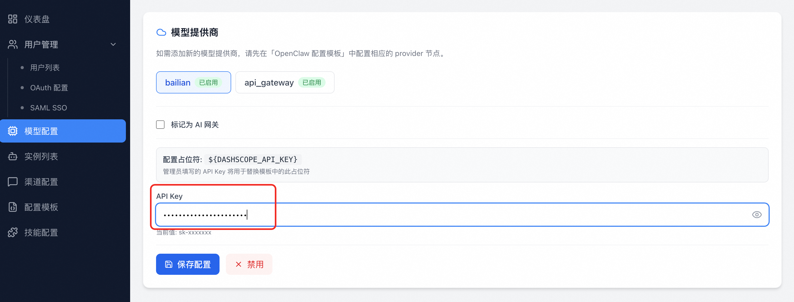
- 点击 「保存配置」 保存 API Key
- 点击 「启用」 按钮启用该提供商
4.6.3 配置 AI 网关
AI 网关类提供商在用户创建实例时会自动为每个用户分配独立的消费者（Consumer）和访问凭证，便于预算控制与审计。平台内置两种 AI 网关：
阿里云 AI 网关
调用阿里云原生 API 网关的 AI Gateway 能力，提供消费者管理、Token 限流、SLS 日志分析。详细配置步骤见 4.7 阿里云 AI 网关。
LiteLLM 网关
LiteLLM 是一个开源的 Proxy Server，支持将数百种模型（OpenAI / Anthropic / Azure / Qwen / DeepSeek …）以统一的 OpenAI 兼容接口输出，内置 User / Key 分离管理、预算控制与切换策略。
操作步骤：
- 点击「LiteLLM 网关」提供商卡片，进入配置面板
- 填写核心参数：
| 配置项 | 必填 | 说明 |
|---|---|---|
| Proxy URL | 是 | LiteLLM 代理服务的地址，如 https://litellm.example.com |
| Master Key | 是 | LiteLLM 的管理员密钥（sk-...），用于自动创建用户与访问凭证。保存时加密存储 |
| API Key 占位符 | 是 | 默认 ${LITELLM_API_KEY}，需与模板 / 启动命令中的占位符一致 |
| 域名占位符 | 是 | 默认 ${LITELLM_PROXY_URL}，需与模板 / 启动命令中的占位符一致 |
| 每用户预算 | 否 | max_budget，每个用户 Key 的累计费用上限（美元） |
| 预算周期 | 否 | budget_duration，如 30d、7d |
- 点击「保存网关配置」 → 「启用」。启用后其他提供商自动禁用。
💡 工作原理： 用户创建实例时，平台会调用 LiteLLM 的
/user/new+/key/generate为该用户创建专属 Key，并将 Key 与 Proxy URL 代入${LITELLM_API_KEY}/${LITELLM_PROXY_URL}占位符后写入沙箱。
4.6.4 新增提供商
如默认提供商无法满足需求（如直连 OpenAI、DeepSeek、自搭的 vLLM），点击列表顶部 「新增提供商」 按钮，填写：
| 字段 | 说明 |
|---|---|
| 名称 / 标识 | 提供商的显示名和内部标识 |
| 类型 | API（标准）、AlibabaCloudAIGateway、LiteLLM |
| API Key / Base URL | 对于标准 API 类型，填写相应的 Key 和基础地址 |
| apiKeyPlaceholder | 模板中将被替换为实际 API Key 的占位符名，如 ${DEEPSEEK_API_KEY} |
| domainPlaceholder | 模板中将被替换为基础地址的占位符名（如需） |
⚠️ 占位符匹配是新增提供商的关键！ 系统通过占位符名称在模板和启动命令中执行替换。新增提供商前请先确认： 1. 在「Agent 配置 → 配置模板」中已添加对应的 provider 节点（JSON 模板）或注释示例（YAML 模板）。 2. 模板中使用的占位符（如
${DEEPSEEK_API_KEY}） 与提供商配置中的apiKeyPlaceholder名称完全一致。 3. 若 Agent 需要在启动命令（如.env文件）中使用该 Key，也要同步添加相同的占位符。
4.6.5 添加模型
在「模型管理」区域点击 「添加模型」 按钮：
| 字段 | 必填 | 说明 | 示例 |
|---|---|---|---|
| 模型名称 | 是 | 模型的显示名称 | 通义千问 Max |
| 提供商 | 是 | 从已启用的提供商下拉列表中选择 | bailian / litellm / api_gateway |
| 模型代码 | 是 | 模型的标识代码 | qwen-max、deepseek-chat |
| 描述 | 否 | 模型的功能描述 | — |
新添加的模型默认为启用状态，可通过卡片上的开关按钮进行启用/禁用切换。用户创建实例时，只能选择状态为已启用的模型。页面顶部提供搜索功能，可按模型名称或提供商搜索。
编辑/删除模型
- 编辑 — 点击卡片底部的「编辑」按钮，可修改模型的名称、提供商、模型代码和描述
- 删除 — 点击删除图标，确认后永久删除模型
4.7 阿里云 AI 网关
路径： /admin/gateway
AI 网关是 AI 调用的统一代理层。在本系统中，AI 网关被配置为一个特殊的模型提供商节点，通过阿里云 AI 网关统一代理 AI 模型的调用，支持凭证分配、Token 统计与限流等高级能力。
AI 网关的更多用法请参考阿里云文档：https://help.aliyun.com/zh/api-gateway/ai-gateway/product-overview/what-is-an-ai-gateway
4.7.1 前置条件：创建阿里云 AI 网关
在管理平台中配置 AI 网关之前，需要先在阿里云控制台完成 AI 网关的创建和基础配置。
步骤一：创建 AI 网关实例
- 访问阿里云 AI 网关控制台：
https://apig.console.aliyun.com - 创建相应地域的 AI 网关实例，推荐配置如下：
| 配置项 | 推荐值 | 说明 |
|---|---|---|
| 部署模式 | Serverless | POC 阶段无需运维 |
| 计费模式 | 按量付费 | 测试阶段成本低 |
| 地域 | 与业务资源同地域 | 如 cn-hangzhou、cn-shanghai |
| 网络类型 | 私网（Intranet）必须打开 | 确保 Sandbox Pod 能通过 VPC 内网访问，公网可按需打开 |
| VPC | 选择与 ACS 集群相同的 VPC | 在 ACS 控制台查看 VPC ID |
| 日志服务 | 使用日志服务 | 提供日志分析和仪表盘，便于问题排查 |
步骤二：配置后端 AI 服务
- 在创建的 AI 网关中，创建 Model API

- 可选择场景模板快速创建 OpenAI 兼容的路由，以无缝接入 OpenClaw
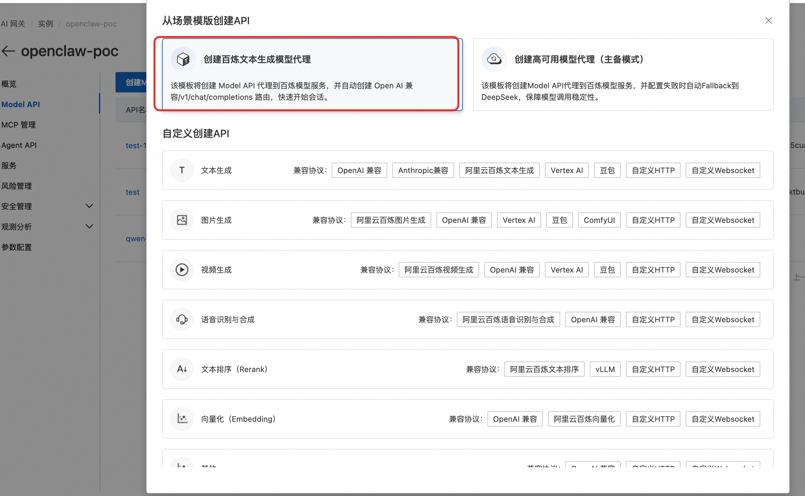
- 设置 API 名称和百炼的 API Key
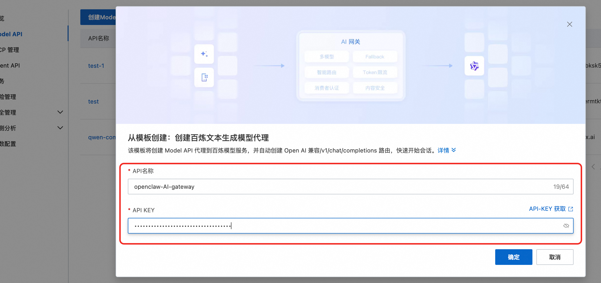
- 创建成功后，在 Model API「消费者认证」中打开「开启认证」开关，并选择「API Key」认证方式
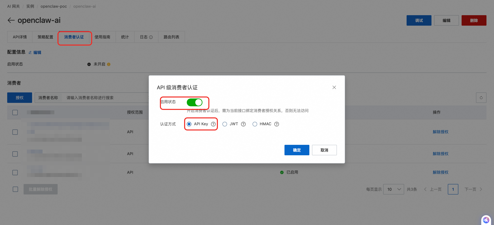
- 配置 API 的域名 (可选) API 创建成功后会提供默认的访问域名，在生产使用中，您需要将业务域名通过DNS服务CNAME至访问域名。直接通过访问域名访问每天有1000次访问限制，默认的访问域名可用于测试，请勿直接生产使用。 您在初步验证阶段可以使用此访问域名进行测试，后续再进行域名绑定。
在AI 网关控制台添加域名

配置 API 的域名
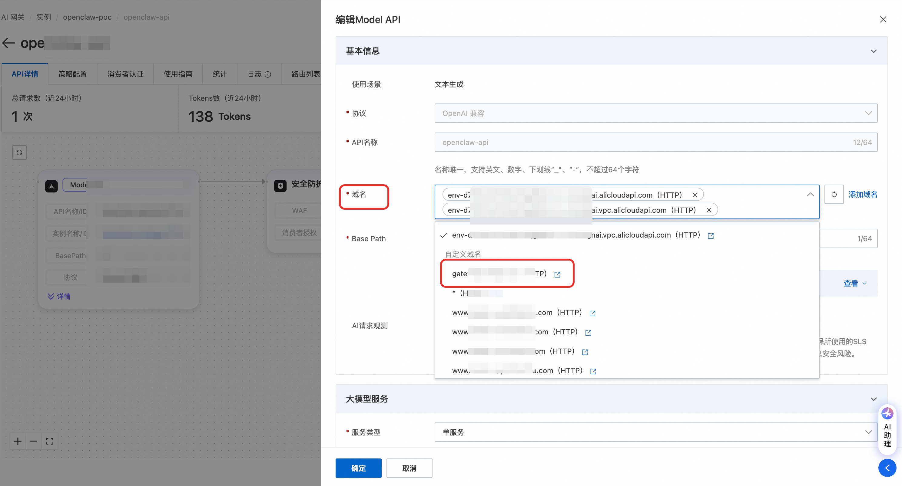
自行配置域名的DNS解析，将业务域名通过DNS服务CNAME至访问域名
4.7.2 在管理平台中配置 AI 网关
完成阿里云侧的 AI 网关创建后，回到本管理平台进行关联配置。
操作步骤：
- 进入「模型配置」页面，选择要标记为 AI 网关的模型提供商（如
api_gateway） - 勾选 「标记为 AI 网关」 复选框，点击 「启用网关」，页面将展开 AI 网关专属配置面板
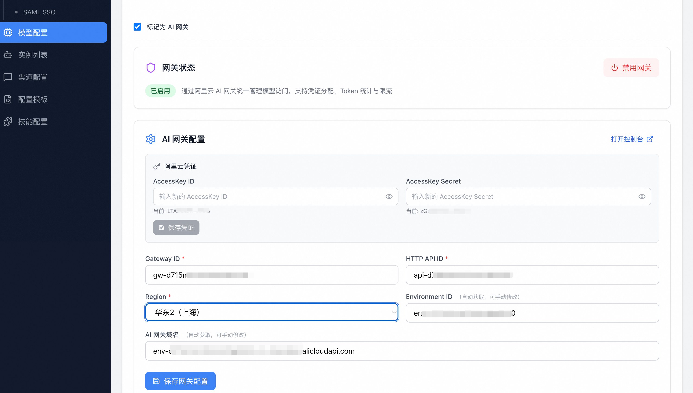
- 配置 阿里云凭证：
- AccessKey ID：阿里云账号的 AccessKey ID
- AccessKey Secret：阿里云账号的 AccessKey Secret
- 点击 「保存凭证」
此处保存的凭证用于获取并修改 AI 网关的相关配置，此凭证需要的 RAM 权限策略如下： 1. AliyunAPIGFullAccess：管理云原生 API 网关的权限 2. AliyunLogReadOnlyAccess：只读访问日志服务（Log）的权限
- 配置 网关参数：
| 配置项 | 必填 | 说明 |
|---|---|---|
| Gateway ID | 是 | AI 网关实例 ID，形如 gw-xxx |
| HTTP API ID | 是 | Model API 的 ID，形如 api-xxx |
| Region | 是 | AI 网关所在地域 |
| Environment ID | — | 填写 Gateway ID 和 HTTP API ID 后保存，系统会自动获取，也可手动修改。用于标识 AI 网关的发布环境 |
| AI 网关域名 | — | 填写 Gateway ID 和 HTTP API ID 后保存，系统会自动获取第一个域名，也可手动修改。该域名是 OpenClaw 实例调用AI网关的实际请求地址，可在 AI 网关控制台的 Model API「使用指南」中查看。生产环境中推荐使用自定义域名，配置步骤参考"配置后端 AI 服务"章节 |
- 点击 「保存网关配置」
配置面板中提供了「打开控制台」链接，可一键跳转至阿里云 AI 网关控制台。
4.7.3 AI 网关启用后的效果
启用 AI 网关后，系统将具备以下能力：
- 凭证自动分配 — 用户创建 Agent 实例时，系统自动为该用户在 AI 网关中创建消费者并分配访问凭证，无需管理员手动操作
- Token 统计 — 系统通过阿里云 SLS（日志服务）自动采集每个用户的 Token 消耗数据
- Token 限流 — 可对用户进行全局或个人级别的 Token 使用限制（详见 4.8.1 Token 统计）
4.8 Token 统计与限流
启用 AI 网关后，系统支持查看用户的 Token 消耗情况，并可配置限流策略控制用量。
4.8.1 Token 统计
管理员可在以下位置查看 Token 消耗数据：
- 用户管理页面 — 用户列表中的「今日 Token 消耗」和「近30日 Token 消耗」列，直接展示每个用户的消耗量
- 管理员仪表盘 — 显示今日活跃用户数、请求次数、总 Token 消耗量，以及消费者 Token 消耗排行榜（Top 10）
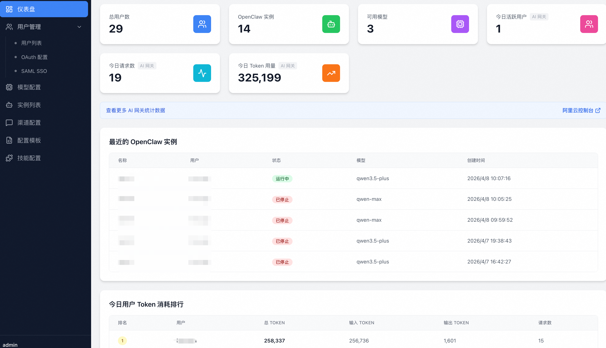
Token 统计数据由阿里云 SLS 日志服务提供，仅在启用 AI 网关后可用。如用户尚未关联消费者（Consumer ID 列显示为「-」），则无法统计该用户的 Token 消耗。
4.8.2 全局限流配置
全局限流策略对所有用户生效，在 AI 网关配置面板中设置。
操作步骤：
- 进入「模型配置」页面，选择已标记为 AI 网关的提供商
- 在 AI 网关配置面板底部找到「Token 限流策略」区域
- 设置限流参数：
- 每用户每日 Token 上限：单位为 tokens/天，留空或输入 0 表示不限制
- 每用户每30天 Token 上限：单位为 tokens/30天，留空或输入 0 表示不限制
- 两个策略可同时生效
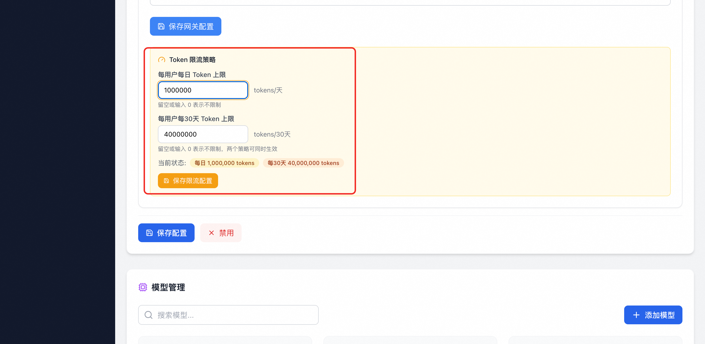
- 点击 「保存限流配置」
- 保存后，页面会显示当前生效的限流状态，如：「每日 1,000,000 tokens 每30天 40,000,000 tokens」
4.8.3 个人限流配置
除全局限流外，管理员可为个别用户设置独立的限流策略。个人限流策略优先于全局策略生效。
操作步骤：
- 进入「用户管理」页面
- 在用户列表中找到目标用户，点击操作列的 「Token 限流」 按钮（仅关联了 Consumer ID 的用户才会显示此按钮）
- 在弹出的「用户 Token 限流」对话框中：
- 页面会展示全局限流策略作为参考（如「每日：1,000,000 tokens 每30天：40,000,000 tokens」）
- 填写该用户的个人限流值：
- 每日 Token 上限（个人）：单位为 tokens/天
- 每30天 Token 上限（个人）：单位为 tokens/30天
- 留空或输入 0 表示不设个人限制，该用户将继承全局限流策略
- 设置个人限制后，该用户以个人限制为准
- 点击 「保存限流配置」
- 对话框顶部会实时展示该用户「当前生效的 Token 上限」，并标注每项限额来源（「个人」或「全局」）
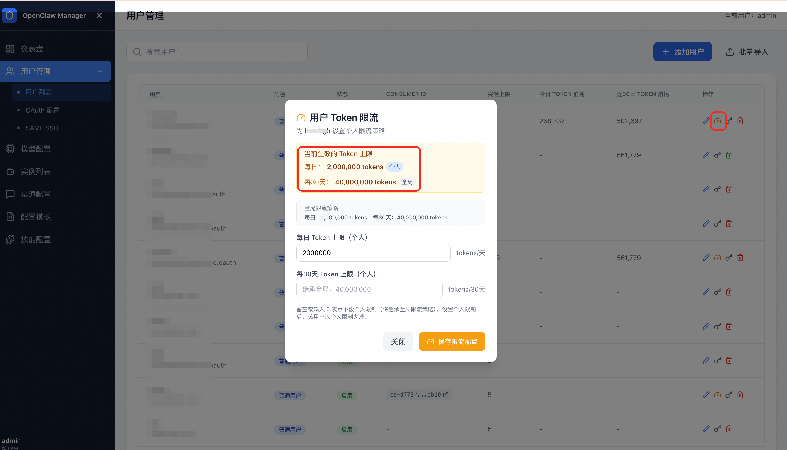
示例： 某用户全局每日限额为 1,000,000 tokens，管理员为其设置个人每日限额为 2,000,000 tokens，则该用户的生效每日限额为 2,000,000 tokens（个人），30天限额仍为全局值 40,000,000 tokens。
4.9 实例列表（管理员视图）
路径： /admin/instances
管理员可以查看和管理所有用户创建的 Agent 实例。
列表功能
- 搜索 — 按实例名称搜索
- 用户过滤 — 按用户名过滤实例（管理员独有）
- 分页 — 每页 10 条记录，支持翻页
表格列说明
| 列名 | 说明 |
|---|---|
| ID | Sandbox ID |
| 名称 | 实例名称和描述 |
| 用户 | 实例所属用户（管理员独有列） |
| Agent 配置 | 实例关联的 Agent 类型，以 indigo 色标签显示 |
| 状态 | 运行中 / 已停止 / 启动中 / 停止中 |
| 模型 | 使用的 AI 模型 |
| 创建时间 | 实例创建时间 |
| 操作 | 查看详情 / 启动停止 / 删除 / 查看 Pod |
管理员特有操作
- 查看 Pod — 如果配置了 ACS 集群 ID，可以直接跳转到阿里云容器服务控制台查看实例的 Pod 详情
- 查看详情 — 进入实例详情页，可以看到实例归属用户等额外信息
5. 用户功能
普通用户登录后进入用户中心。用户中心同样采用左侧导航栏 + 右侧内容区的布局，导航栏包含两个菜单项：实例列表 和 个人资料。
左侧导航栏底部显示当前登录用户名、角色（普通用户）和退出登录按钮。
注意： 如果未登录直接访问
/user/instances，页面会显示 404。请先通过登录页面完成登录。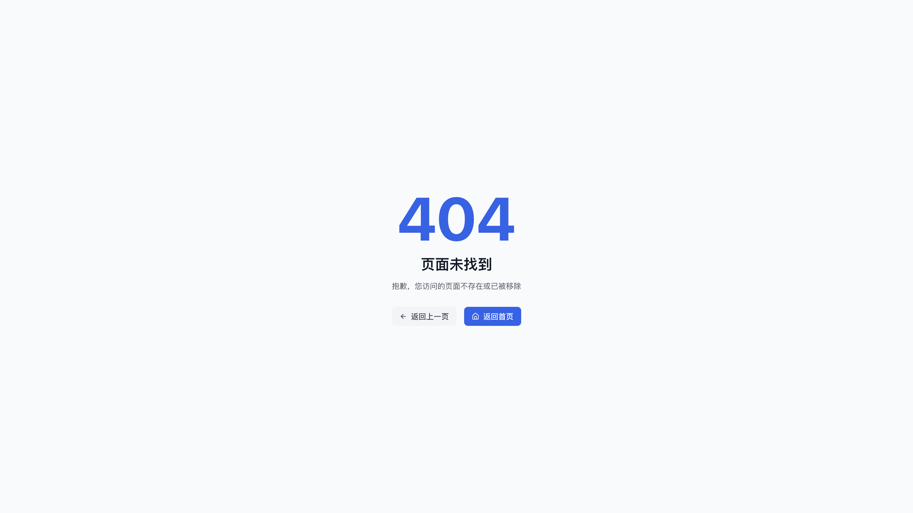
5.1 实例列表
路径： /user/instances
用户的主页面，展示当前用户创建的所有 Agent 实例。
列表功能
- 搜索 — 左上角搜索框，按实例名称搜索
- 创建 — 右上角 「创建实例」 按钮创建新实例
- 分页 — 每页 10 条记录，底部显示分页导航
表格列说明
| 列名 | 说明 |
|---|---|
| ID | Sandbox ID |
| 名称 | 实例名称 |
| Agent 配置 | 实例关联的 Agent 类型 |
| 状态 | 运行中 / 已停止 |
| 模型 | 使用的 AI 模型 |
| 创建时间 | 创建时间 |
| 操作 | 查看详情 / 启动停止 / 删除 |
操作按钮说明（从左到右）
| 图标 | 操作 | 说明 |
|---|---|---|
| 👁 眼睛 | 查看详情 | 进入实例详情页，查看和修改配置 |
| ▶ / ⏹ 播放/停止 | 启动/停止 | 绿色为启动，橙色为停止；操作中会显示旋转加载图标 |
| 🗑 删除 | 删除 | 红色，永久删除实例和关联的 Sandbox，需确认 |
5.2 创建 Agent 实例
路径： /user/instances/create
创建页面顶部有「返回列表」链接，主体为一个表单卡片。
操作步骤
- 在实例列表页面点击右上角蓝色的 「创建实例」 按钮
- 填写以下信息：
| 字段 | 必填 | 说明 |
|---|---|---|
| 选择 Agent 配置 | 是 | 以卡片形式展示所有已启用的 Agent 类型（如 OpenClaw、Hermes 等），点击选择一个。每张卡片显示名称、描述和类别标签（内置/自定义） |
| 实例名称 | 是 | 为实例起一个有意义的名称，如“客服助手”、“销售机器人” |
| 选择 AI 模型 | 是 | 下拉选择框，从管理员配置的可用模型列表中选择一个（显示「模型名 - 提供商」格式） |
| 选择消息渠道 | 否 | 下拉选择框，根据所选 Agent 类型动态加载可用渠道，默认为「暂不配置」 |
- 如果选择了消息渠道，表单会展开一个「渠道配置」区域，需要填写对应的 Client ID 和 Client Secret
- 点击右下角 「创建实例」 按钮提交（创建中按钮会显示加载动画）
创建时系统将自动完成以下操作：
- 根据所选 Agent 类型创建沙箱环境
- 基于 Agent 配置模板和所选模型生成实例配置
- 如启用了 AI 网关，自动为该用户创建 AI 网关消费者并分配访问凭证
- 启动 Agent 服务
等待实例状态变为「运行中」后即可使用。创建成功后将自动跳转到实例详情页。
使用提示
页面底部有蓝色提示卡片，包含以下建议： - 为不同的使用场景创建多个实例 - 选择 Agent 配置和合适的 AI 模型 - 创建后可以在详情页随时修改配置
5.3 实例详情与配置
路径： /user/instances/:id
实例详情页分为三个卡片区域：基本信息、模型配置、渠道配置。页面顶部左侧有「返回列表」链接，右侧有操作按钮。
顶部操作按钮
页面右上角有两个按钮：
| 按钮 | 说明 |
|---|---|
| 启动 / 停止 | 蓝色（启动）或橙色（停止）按钮，控制实例的运行状态 |
| 保存配置 | 蓝色按钮，当模型或渠道配置修改后变为可点击状态 |
基本信息卡片
以两列网格展示实例的核心信息：
| 字段 | 说明 |
|---|---|
| ID | Sandbox 唯一标识（格式如 namespace--podname） |
| 名称 | 实例名称 |
| 状态 | 绿色「运行中」或灰色「已停止」徽章 |
| 创建时间 | 实例创建时间（中文格式） |
| 最后活跃 | 实例最后活跃时间，如无则显示「暂无」 |
| 归属用户 | 仅管理员视图显示，实例所属用户名 |
| 应用访问链接 | 实例运行后的访问 URL，蓝色可点击链接，在新窗口打开 |
| /etc/hosts 配置 | 开发模式下显示，黑底绿字的代码块，需要添加到本地 hosts 文件 |
| 查看容器 | 仅管理员视图显示，跳转到阿里云控制台查看 Pod |
模型配置卡片
用于修改实例使用的 AI 模型：
- 在「选择 AI 模型」下拉菜单中选择新的模型（显示「模型名 (提供商)」格式）
- 修改后下方会出现橙色提示文字："已修改，点击保存配置生效"
- 点击页面顶部的 「保存配置」 按钮保存更改
渠道配置卡片
用于修改实例的消息渠道：
- 在「选择渠道」下拉菜单中选择渠道类型（如飞书、钉钉），选择「暂不配置」可清除渠道
- 选择渠道后展开配置区域，包含 Client ID（文本输入）和 Client Secret（密码输入）
- Client Secret 输入框的 placeholder 为"留空则保持不变"，修改密码时才需要填写
- 修改后下方会出现橙色提示文字，点击 「保存配置」 按钮保存
5.4 暂停与重启实例
当不需要使用 Agent 实例时，可将其暂停以释放计算资源。暂停后实例的数据和记忆均会保留。
暂停实例
- 在「实例列表」页面找到目标实例
- 点击操作列的 「停止」 按钮（橙色）
- 实例状态将变为「停止中」，完成后显示为「已停止」
重新启动实例
暂停的实例可随时重新启动，恢复后实例的配置、数据和历史记忆均完好保留。
- 在「实例列表」页面找到状态为「已停止」的目标实例
- 点击操作列的 「启动」 按钮（绿色）
- 实例状态将变为「启动中」，完成后显示为「运行中」
5.5 用户侧 Token 用量概览
如启用了 AI 网关，用户实例列表页面顶部会展示 Token 用量概览卡片，包含：
| 指标 | 说明 |
|---|---|
| 实例数量 | 当前用户拥有的实例数 |
| 今日 Token 用量 | 今日已使用的 Token 数量，及每日限额进度条 |
| 近30天 Token 用量 | 近30天已使用的 Token 数量，及30天限额进度条 |
进度条会根据使用率变色：绿色（<70%）、琥珀色（70%-90%）、红色（≥90%）。
6. 常见问题 FAQ
Q1: 用户登录页没有可用的登录方式？
A: 用户登录页始终支持邮箱密码登录（页面底部），无需额外配置。如果还需要 OAuth 或 SSO 登录方式，管理员需要在「用户管理 → 单点登录」页面完成配置：
- 配置 OAuth：在 Supabase 控制台的 Authentication → Providers 中启用 OAuth 提供商（如阿里云），并在对应平台创建 OAuth 应用，将回调地址设为 https://<Supabase URL>/auth/v1/callback。详见 4.3.1 OAuth 配置。
- 或配置 SAML SSO：在「单点登录」的 SAML 标签页添加企业 SSO 配置。详见 4.3.2 SAML SSO 配置。
- 注意： OAuth 和 SAML SSO 为互斥配置（二选一）。
对于邮箱密码登录，管理员需先在「用户管理」中为用户创建账号（选择「邮箱密码」认证方式），用户才能使用该邮箱和密码登录。
Q2: 创建实例失败怎么办？
A: 请检查以下几点： 1. 是否已达到用户的实例数量上限（默认 5 个），可联系管理员在用户管理中调整 2. 后端 API 服务和 E2B 服务是否正常连接 3. 是否已在「模型配置」中添加并启用了至少一个 AI 模型 4. 是否已在「Agent 配置」中启用了至少一个 Agent 类型 5. 判断 sandboxset 中写入配置是否正确，非 root 用户请确保为正确的配置写入路径
Q3: Token 用量统计不显示？
A: Token 用量统计依赖 AI 网关和 SLS 日志服务。需要管理员在「AI 网关」页面正确配置并启用网关，且阿里云 AccessKey 需具有 SLS 的读取权限。未启用 AI 网关时，仪表盘和用户管理中不会显示 Token 相关的指标列。
Q4: 如何访问运行中的实例？
A: 实例启动后，在实例详情页会显示「应用访问链接」。点击链接即可在新窗口打开 Agent 的界面。如果是开发环境，详情页可能会显示 /etc/hosts 配置，需要将其添加到本地 hosts 文件后才能正常访问。
Q5: 支持哪些 AI 模型？
A: 平台本身不限制模型类型，管理员可以在「模型配置」页面自由添加模型提供商和模型。常见的模型包括： - Qwen 系列（通义千问） - DeepSeek 系列 - 其他兼容 OpenAI API 格式的模型
Q6: 渠道配置中的 Client ID 和 Client Secret 在哪获取？
A: 根据不同的渠道类型，前往对应平台创建机器人应用后获取： - 飞书 — 飞书开放平台 - 钉钉 — 钉钉开放平台 - 企业微信 — 企业微信管理后台 - QQ — QQ 开放平台
Q7: SAML SSO 登录后跳转到了 Supabase 页面而不是应用？
A: 前往 管理后台 → 用户管理 → 单点登录 → SAML 标签页，在「回调地址配置」区域将 Site URL 设置为你的应用地址（如 https://your-app.example.com），保存后重试。
Q8: OAuth 登录按钮没有出现？
A: OAuth 提供商需要在 Supabase 控制台 中启用，而不是在 Agent Manager 中配置。请：
1. 登录 Supabase 控制台 → Authentication → Providers
2. 找到对应的提供商（如 AlibabaCloud），开启 Enable 开关
3. 填入对应平台的 Client ID / Client Secret
4. 保存后，回到 Agent Manager 的「单点登录 → OAuth 标签页」点击「刷新」确认状态
5. 再访问用户登录页面（/login），对应的登录按钮应该已经出现
Q9: 阿里云 OAuth 回调地址怎么填？
A: 在阿里云 RAM 控制台创建 OAuth 应用时，回调地址（Redirect URI）统一填写：
https://<你的Supabase项目URL>/auth/v1/callback
例如 https://abc123.supabase.co/auth/v1/callback。Supabase 会自动处理所有 OAuth 提供商的回调逻辑，所有提供商使用同一个回调地址。
Q10: 可以同时配置多种登录方式吗？
A: OAuth 和 SAML SSO 为互斥配置（二选一），管理员在「单点登录」配置页面选择启用其中一种。邮箱密码登录始终可用，与 OAuth/SAML 并存。你可以同时启用多个 OAuth 提供商（如阿里云 + GitHub + Google），但不能同时启用 OAuth 和 SAML SSO。
Q11: 平台支持哪些 Agent 类型？
A: 平台内置了 OpenClaw（JSON 配置）和 Hermes（YAML 配置）两种 Agent 类型，两者的沙箱模板 agent-manager-openclaw 和 agent-manager-hermes 在部署时自动创建于集群中。此外，管理员还可以在「Agent 配置」中通过「从模板复制」或「自定义创建」新增类型，并在「沙箱配置」中配套创建对应的 SandboxSet，支持任意兼容 E2B 沙箱的 Agent 框架。
Q12: 新增模型提供商后模型调用失败？
A: 大概率是占位符不匹配。新增提供商时填写的 apiKeyPlaceholder / domainPlaceholder 必须与 Agent 配置模板及启动命令中实际使用的占位符名称完全一致，否则模板变量替换将跳过此提供商。详见 4.6.4 新增提供商。
Q13: 修改 SandboxSet 后新配置没生效？
A: 已运行的实例使用的是修改前的沙箱环境。在「沙箱配置」编辑并保存 SandboxSet YAML 后，需在「实例列表」对应实例上点击「停止」再「启动」，新配置才会应用。
文档版本：v2.1 | 更新日期：2026-04-23